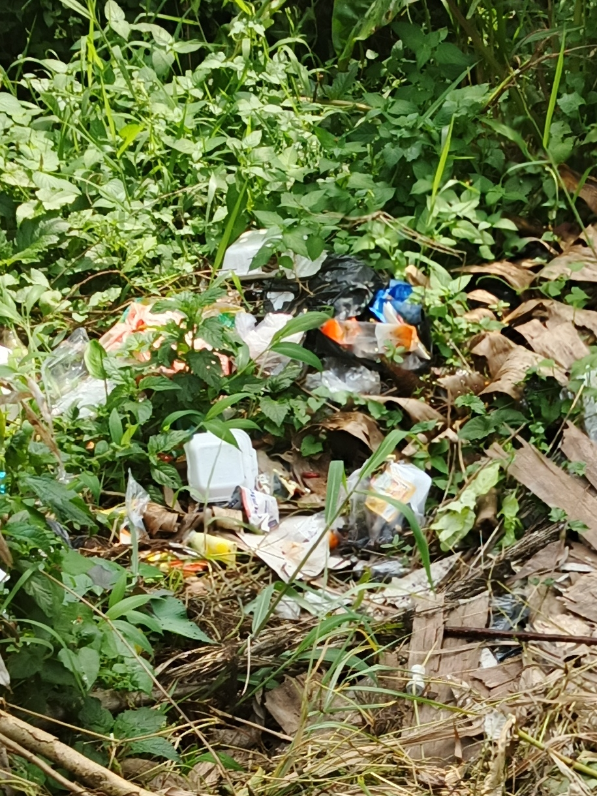

Judul Artikel: Pencemaran tanah
Nama Penulis: M Fikal Wijaya
Lokasi Pengamatan: cicurug
Tanggal Penulisan: 10-02-2026
Pencemaran tanah adalah kondisi ketika tanah terkontaminasi oleh zat-zat berbahaya akibat aktivitas manusia yang tidak ramah lingkungan. Penyebab utama pencemaran tanah meliputi pembuangan sampah sembarangan, kebocoran limbah industri, tumpahan minyak, serta penggunaan pestisida dan pupuk kimia secara berlebihan dalam jangka waktu lama. Tanah yang seharusnya menjadi sumber kehidupan justru berubah menjadi media yang menyimpan racun bagi makhluk hidup di sekitarnya.
Sampah plastik menjadi salah satu penyumbang terbesar pencemaran tanah di era modern. Plastik merupakan material anorganik yang sangat sulit terurai secara alami, bahkan membutuhkan waktu puluhan hingga ratusan tahun untuk hancur. Akibatnya, tanah yang tertutup sampah plastik menjadi kedap air, sulit menyerap curah hujan, dan tidak dapat mendukung pertumbuhan akar tanaman secara optimal karena struktur pori-porinya tersumbat.
Selain sampah rumah tangga, limbah industri cair maupun padat berperan besar dalam merusak kualitas tanah secara permanen. Limbah yang mengandung logam berat seperti merkuri, timbal, kromium, dan arsenik dapat meresap ke dalam pori-pori tanah hingga mencemari cadangan air tanah di bawahnya. Paparan logam berat ini sangat berbahaya karena bersifat persisten. Jika zat ini masuk ke dalam rantai makanan melalui tanaman yang kita konsumsi, hal itu dapat menyebabkan kerusakan saraf, kanker, dan gangguan kesehatan serius lainnya pada manusia.
Penggunaan pestisida dan pupuk kimia secara berlebihan dalam sektor pertanian juga menjadi bumerang bagi kesuburan lahan. Bahan kimia sintetis tersebut dapat merusak struktur kimia tanah dan membunuh organisme penting yang menjaga kesuburan alami, seperti cacing tanah dan mikroorganisme pengurai. Tanpa kehadiran organisme ini, tanah akan menjadi keras, tidak subur, dan ketergantungan pada pupuk kimia akan semakin meningkat, menciptakan lingkaran setan yang merugikan petani.
Dampak pencemaran tanah tidak hanya dirasakan oleh lingkungan, tetapi juga secara langsung oleh manusia melalui konsumsi pangan. Tanaman yang tumbuh di atas lahan tercemar memiliki kecenderungan menyerap zat beracun melalui akarnya. Hal ini meningkatkan risiko penyakit kronis dan gangguan metabolisme bagi siapa saja yang mengonsumsi hasil panen tersebut dalam jangka panjang. Ketahanan pangan nasional pun terancam karena lahan produktif semakin menyusut akibat kontaminasi yang parah.
Tanah yang rusak juga dapat memicu bencana alam seperti banjir dan erosi. Tanah yang dipenuhi sampah dan kehilangan struktur alaminya akan sulit menyerap air saat hujan deras melanda. Air akan mengalir begitu saja di permukaan (run-off), menimbulkan genangan besar dan membawa lapisan tanah paling subur menuju sungai. Selain itu, ekosistem lokal akan terganggu karena banyak spesies tumbuhan dan hewan tanah yang kehilangan habitat asli mereka.
Upaya pencegahan harus dimulai dari perubahan perilaku kolektif, seperti membiasakan diri memilah sampah organik dan non-organik sejak dari rumah. Sampah organik dapat diolah menjadi kompos yang mampu memperbaiki struktur tanah secara alami. Sementara itu, sampah plastik dan logam harus diserahkan ke bank sampah untuk didaur ulang agar tidak berakhir di tempat pembuangan akhir yang mencemari tanah luas.
Teknologi modern seperti bioremediasi dan fitoremediasi juga perlu diterapkan pada lahan-lahan yang sudah terlanjur rusak. Bioremediasi menggunakan bantuan bakteri atau jamur khusus untuk mengurai polutan, sedangkan fitoremediasi memanfaatkan tanaman tertentu yang mampu menyerap logam berat dari dalam tanah. Pemerintah memiliki peran penting dalam menegakkan regulasi pembuangan limbah industri agar tidak ada lagi perusahaan yang membuang racun ke lingkungan secara ilegal.
Dengan meningkatkan kesadaran, tanggung jawab bersama, dan penerapan teknologi ramah lingkungan, pencemaran tanah dapat dikurangi secara signifikan. Perlindungan terhadap tanah berarti menjaga aset masa depan yang esensial bagi kehidupan. Dengan tanah yang sehat, kita tidak hanya menjamin ketersediaan pangan yang aman, tetapi juga memastikan keberlangsungan ekosistem yang seimbang untuk generasi mendatang.